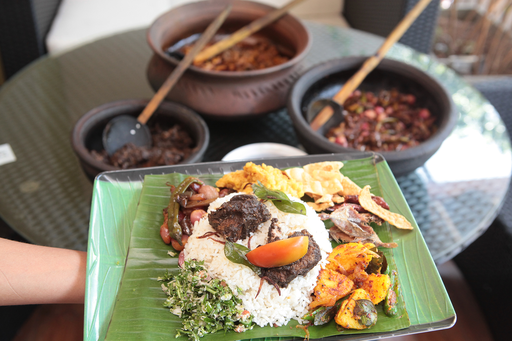
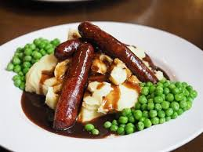
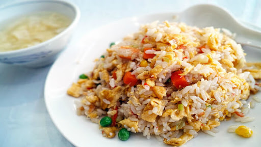
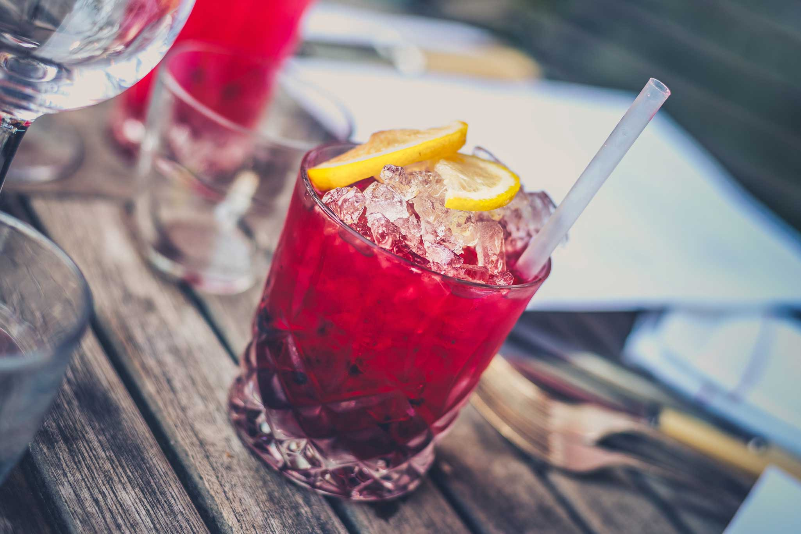
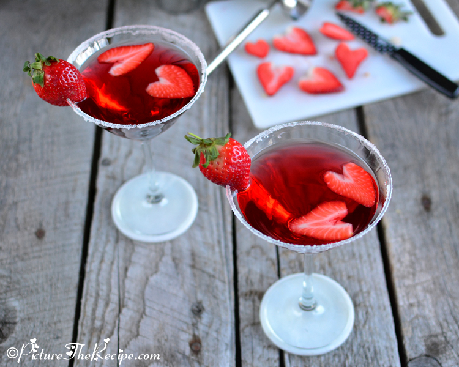

Sri Lankan Traditional Food

The central feature of Sri Lankan cuisine
is boiled or steamed rice, served with
a curry
of fish or chicken , along with
other curries
made with vegetables, lentils,
or fruits. Dishes are accompanied
by pickled
fruits or vegetables, chutneys, and sambols
British Food

Well-known traditional British dishes include
full breakfast, fish and chips, the Christmas
dinner,
the Sunday roast, steak and kidney
pie, shepherd's pie, and bangers and mash.
People in Britain,
however, eat a wide
variety of foods based on the cuisines of Europe,
India, and other parts of
the world.
Chineese Food

Traditionally, Southern Chinese prefer
their rice polished and plain,
as a base staple to eat
with
meat and vegetables.The basic elements
of Chinese fried rice include rice,
meat and vegetables,soy sauce and garlic.
A number of fried rice recipes
have been developed in China,
such as Yangchow and Szechwan fried rice.
Hot Drinks

Black coffee
Hot chocolate
Tea
Nescafe
Cappuccino
Hot Drinks

Ice Coffee
Milkshakes
All kinds of fruit juice
Soft Drinks
Hot Drinks

Mojito
Long Island Iced Tea
Bloody Mary
Margarita
Moscow Mule